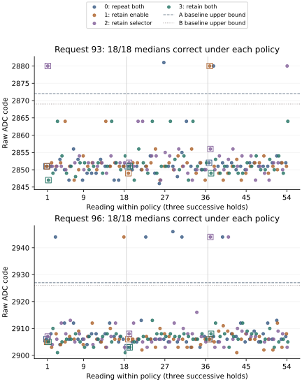

Return: configuration retained between conversions
The 2 October return recovered 648 acquisitions and 23,444 native records, including complete operation, control and configuration traces, restoration, release and terminal status. Recording and all three four-millisecond slot requirements passed. Every fixed calibration correctly recognizes all 72 reference medians and 144 held-out medians. No bound was changed.
Retaining both configuration values produced zero raw exceptions in 108 held-out readings. The other three policies produced thirteen in 324. All four calibrations identify the same thirteen readings as outside the intended state's interval, although wrong-state assignment and rejection differ between calibrations.
| Policy after first reading | Request 93: exceptions / raw readings | Request 96: exceptions / raw readings | Correct medians, each request and calibration |
|---|---|---|---|
| 0: repeat both writes | 2 / 54 | 5 / 54 | 18 / 18 |
| 1: retain enable; repeat selector | 1 / 54 | 1 / 54 | 18 / 18 |
| 2: repeat enable; retain selector | 2 / 54 | 2 / 54 | 18 / 18 |
| 3: retain both | 0 / 54 | 0 / 54 | 18 / 18 |
First readings always perform reset, enable and channel selection. Three exceptions occur during this common initialization: request 93 / policy 2 in visit 1, and request 93 / policy 1 and request 96 / policy 2 in visit 3. They cannot be attributed to configuration omissions on those readings.
| Policy | Request 93: later exceptions / readings | Request 96: later exceptions / readings |
|---|---|---|
| 0 | 2 / 51 | 5 / 51 |
| 1 | 0 / 51 | 1 / 51 |
| 2 | 1 / 51 | 1 / 51 |
| 3 | 0 / 51 | 0 / 51 |
These later readings supply the direct omission comparison. With selector reissue retained, omitting enable changes the observed exception counts from 2 to 0 at request 93 and from 5 to 1 at request 96. With selector reissue omitted, the corresponding counts are 1 to 0 at each request. With enable reissue retained, omitting selector changes 2 to 1 and 5 to 1; with enable retained after initialization, it changes 0 to 0 and 1 to 0. Each count has 51 readings. These are descriptive contrasts from three holds per condition in one boot, not independent estimates of a causal effect.
The raw held-out values outside the intended intervals are 2880 and 2881 at request 93, and 2944 and 2946 at request 96. A baseline assigns eight to the wrong state and rejects five; B baseline assigns one to the wrong state and rejects twelve. Each candidate rejects all thirteen. All four rules correctly recognize the remaining 419 raw readings. No observation is unavailable. The smallest correct held-out median margins are 14, 10, 13 and 9 ADC codes for A baseline, A candidate, B baseline and B candidate.

Visits 1, 2 and 3 contain three, four and six raw exceptions respectively. Policy 3 has none in any visit, at either request, including all six initialization readings and all 102 later readings. This is a useful recurrence within the run; the three visits share one boot and do not establish recurrence across boots.
CPU, pin and transaction observations
All 22,092 sequential CPU/pin snapshots retain ISR=0, DAIF=0x3c0 and CurrentEL=8 (EL2). No pending IRQ, FIQ or SError flag, within-access change or change between consecutive snapshots was recorded. Both PMIC lines were high and released, with both mux fields selecting GPIO, in every snapshot. There was no inhibited or failed transfer. The same observations apply to exceptional and ordinary ADC readings.
The retained quiet observer additionally records 150,774 pin-observation iterations, with no sampled line transition, unexpected direction or mux change. The intervals lasted 1.000000–1.004500 milliseconds; the largest recorded observation gap was 7.074 microseconds.
The access counters bracket the new snapshots but do not timestamp each component register read. Conservative upper bounds on gaps between successive snapshots reach 4.053 milliseconds within an acquisition and 10.535 milliseconds between acquisitions. These bounds include portions of the surrounding accesses and padding. The much shorter quiet-observer gap applies only inside its declared one-millisecond windows.
These observations provide no positive indication of competing control at the sampled points. They cannot exclude pulses between snapshots, interrupt sources disabled or masked upstream, another CPU, DMA, internal component activity or another interface. DAIF records the executing CPU's masks; it does not describe every upstream interrupt route. No source of communication is identified and exclusive ownership of the cluster is not established.
The configuration trace contains 11,046 events: 10,638 ADC-related register transfers, 204 omitted enable writes and 204 omitted selector writes. Thirty first-in-hold resets were performed; 618 later resets were omitted by the outer control operation. These omissions match the declared schedule. All four pre/post-quiet register values remain zero, post-trigger status is 1 and cleanup status is 0 throughout.
Reset slots lasted 4.000000–4.001500 milliseconds, enable slots 4.000000–4.001611 milliseconds, and selector slots 4.000000–4.001648 milliseconds. Every performed transfer fit its slot. All request readbacks and repeated result-octet pairs agree, including exceptions. No transport, pin, timing or trace-capacity failure was reported. Status agreement and repeated digital values do not independently establish analog conversion freshness.
Transfer of the fixed reference bounds
All 72 reference medians pass all four frozen calibrations. Four individual reference readings fail at least one rule. Two request-90 readings of 2816 are accepted only at A baseline's upper endpoint. A request-99 reading of 3008 is assigned to state 4 by every rule although the expected state is 3. A request-102 reading of 3007 falls below B candidate's lower bound and is accepted by the other three rules.
Out of 216 raw reference readings, A baseline gives 215 correct / 1 wrong-state / 0 rejected; A candidate and B baseline each give 213 / 1 / 2; B candidate gives 212 / 1 / 3. None is unavailable. The request-99 wrong-state reading recurs from the preceding return. Complete median recognition therefore does not establish reliable single-reading recognition across all six states.
Recording and provenance
Two read-only acquisitions of the 96 MiB region matched. All 282 frozen preparation artifacts, including 274 source snapshots, verify. The reader frozen before execution reproduces the complete analysis. Seven return checks independently reconstruct the classifications, policy exposures, native diagnostic fields, timing and missing-record rejection.
Acquisition occupied 33.736 seconds. The terminal counter corresponds to 957.251 seconds, approximately 15 minutes 57 seconds, at the configured 54 MHz frequency. The remaining interval includes native record encoding, storage and verification. The terminal timestamp follows all auxiliary journal readbacks and precedes its own write/readback; it does not measure total powered duration. The prescribed allowance was twenty minutes; no workflow deviation was reported.
The previous journal and boot-file bytes are unchanged. Seven boot-volume metadata sectors differ; their writer and modification time are not identified by these bytes. The captured medium was not repaired or rewritten.
Capture SHA-256: e9d33036ba1522ad6531bfb1ba9a7a33dda7ac89ad3b587a88e4675a59cc49c5.
Decoded records · Policy and diagnostic observations · Provenance · Boot-volume comparison · Return index
Question and rationale
Do repeated ADC enable or channel-selection writes contribute to the exceptional raw readings? Do sampled CPU interrupt flags or PMIC pin changes coincide with those readings?
The preceding conversion-control return correctly recognized every reference and held-out three-reading median under four fixed calibrations, while retaining eight held-out raw exceptions. Three occurred when the immediate reset was omitted. No pin contradiction appeared in the sampled quiet intervals. The immediate per-conversion reset is therefore not necessary for those cases; enable and selector writes remain common to both previous policies.
This investigation separates those two remaining configuration choices in a two-factor comparison. It adds the same diagnostic observations to every condition. Recognition intervals remain the four actual calibrations from the reference-repeatability return; neither current references nor held-out observations may refit them.
Conditions and exposure
Counts, requests, times and ADC values below are decimal; register addresses and instruction words are hexadecimal. Native journal encoding remains senary. Each hold begins with reset, enable and selector writes. Subsequent readings follow the assigned policy:
| Policy | Enable, 0x801a=1 | Selector, 0x8010=15 |
|---|---|---|
| 0 | Repeat each conversion | Repeat each conversion |
| 1 | Retain after first | Repeat each conversion |
| 2 | Repeat each conversion | Retain after first |
| 3 | Retain after first | Retain after first |
First acquire 36 readings at each nominal request 90, 93, 96, 99, 102 and 105: 216 reference observations. Reset occurs only at the first reading of each reference hold; both configuration writes repeat. These observations test transfer of the frozen bounds under the current instrumentation.
Then perform three visits, each containing all eight combinations of request 93 or 96 and policy 0, 1, 2 or 3. Each condition receives an 18-reading hold in each visit: 54 raw readings and eighteen disjoint triple medians per condition. There are 432 held-out readings, 144 held-out medians and 648 total acquisitions.
| Visit | Ordered request / policy holds |
|---|---|
| 1 | 93/0, 96/3, 93/1, 96/2, 96/0, 93/3, 96/1, 93/2 |
| 2 | 93/2, 96/1, 93/3, 96/0, 96/2, 93/1, 96/3, 93/0 |
| 3 | 96/0, 93/3, 96/1, 93/2, 93/0, 96/3, 93/1, 96/2 |
All later resets within a hold are omitted. The first reading remains separately identifiable because it initializes the retained configuration; it must not be pooled with omitted-write readings when estimating their association with exceptions. Three holds in one boot are not independent apparatus replications or complete order counterbalancing.
Native observations and controlled timing
SEIGRASM retains the previous one-millisecond released-pin observation and the two existing ADC register reads before and after it. Every delegated register access now also receives sequential CPU and pin snapshots before and after transport. CPU observations retain ISR_EL1, DAIF and CurrentEL; pin observations retain the already-used DATA, IODIR and two mux fields.
At the required EL2 entry, the architectural interrupt-status observation exposes pending IRQ, FIQ and SError flags at the executing processing element. The masks and exception level are recorded alongside them. Reading the status does not acknowledge an interrupt. Arm describes these fields and their read encoding in the AArch64 system-register reference in DDI 0500E, section 4.3.77; this architectural reference does not characterize the Pi's interrupt routing. No interrupt-controller acknowledgement, pending-bit clearing, interrupt enabling, FIFO consumption or additional peripheral address is introduced.
Both configuration writes occupy a minimum four-millisecond slot, whether transferred or omitted. The existing four-millisecond reset slot and subsequent twenty-microsecond reset delay remain. Individual transport end, padded slot end and original outer access brackets are retained. Timing failures are reported separately from recognition.
The added snapshot is non-acknowledging but is not temporally neutral: instructions and MMIO reads take time, and configuration padding changes cadence relative to the preceding run. Both choices receive the same instrumentation and budgets. Comparisons within this run concern the declared write policies; a difference from an older uninstrumented or differently paced run cannot isolate the policy effect.
A sampled low line, driven direction or non-GPIO selector before a delegated access inhibits that access and returns status 244; a contradiction after an access also fails it. The original ADC retains its existing transport-status mapping. Faults stop the acquisition prefix and preserve restoration and recording attempts. Pending CPU flags are recorded without clearing or acknowledging them and do not by themselves stop acquisition.
Instruction and recording path
The existing SD loader enters literal AArch64 SEIGRASM at EL2. The new reissue sample entry binds the declared policy and diagnostic row, then delegates to the existing control, acquisition, ADC and GPIO register-transport operations. Its read/write entries suppress only the selected enable or selector reissues. The new signals operation reads the CPU and pin fields. Electrical controls, guard checks, one-millisecond settling, trigger, status cleanup, busy polling, repeated result-octet reads and final restoration remain in their existing owners.
Both new operations are explicit literal opcode words. PC tooling places their bytes and interface data into the image, validates supplied-device executions and independently decodes returned native records. It does not compile a foreign target implementation. Existing boot firmware, supplied MMIO addresses and incomplete component register semantics remain apparatus limitations; these changes do not establish automatic discovery, firmware replacement or another Hyphos creation result.
Each observation retains the original 72-word sample, nine-word operation record and 152-word control trace, followed by 128 configuration words. The configuration header is schema, policy, hold-first flag, completion, completed-event count, overflow, counter frequency and slot budget. Twenty six-word slots follow: actual action kind, start, transport end, slot end, snapshot before and snapshot after.
Action 0 is a read, 1 a write, 3 an omitted enable write, 4 an omitted selector write and 5 an access inhibited by unexpected pins. An omitted reset has no delegated transport call and its additional slot stays empty. The original control trace's write kind records an attempted delegation; only the configuration trace distinguishes actual transfer from the new omissions. An inhibited access retains one contradictory snapshot in both fields; it must not be counted as two independent pin observations.
Each snapshot packs ISR in bits 0–15, DAIF in 16–31, CurrentEL in 32–39, line state in 40–41, direction in 42–43 and the SCL/SDA mux nibbles in 44–47 and 48–51. Observations are sequential. Counters bracket the encompassing access; they do not supply simultaneous timestamps for the individual register reads.
All acquisitions precede SD persistence. Four variable-length journals contain the acquisition and diagnostic rows; the primary journal retains restoration, release and terminal status. A complete run produces 23,444 native records.
Declared assessment
| Property | Requirement or reported comparison |
|---|---|
| Recording | 648 completed acquisitions, operation records, control traces and configuration traces; successful restoration/release; all journal footers and terminal record recovered. |
| Recognition | Report all four fixed calibrations separately. Each must recognize all 72 reference medians and 144 held-out medians to meet its median criterion. Raw correct, wrong-state, unresolved and unavailable outcomes remain separate. |
| Policy execution | First readings perform reset, enable and selection. Later reset omissions and each selected enable/selector omission must match the declared schedule. No unrecorded substitution, retry or exclusion. |
| Timing | Reset, enable and selector slots must each meet the four-millisecond minimum, with no more than fifty microseconds overshoot; successful transport must fit within its slot. Retain and report overruns. |
| Communication observations | Retain pending flags, mask/level context and pin fields for every attempted delegated access. Report persistent flags, changes, gaps between observations, and sampled contradictions alongside raw exceptions and ordinary readings. |
| Comparison | Compare policy 0 versus 1 and 2 versus 3 for enable reissue; 0 versus 2 and 1 versus 3 for selector reissue. Separate requests, visits, hold positions, first readings and later retained-configuration readings. Any interaction remains visible. |
A smaller exception count in a single boot is association evidence, not demonstrated elimination or causality. Pending flags do not identify the originating component or prove an ADC interaction. No pending flag at sampled instants cannot exclude pulses between samples, signals masked or disabled upstream, another CPU's activity, DMA, internal component activity or communication on another interface. The diagnostics do not independently prove analog conversion freshness.
Interpretation and next comparison
Both retained settings remain usable across the seventeen subsequent conversions in each observed hold. Their combined retention coincides with no raw exception in this boot. Omitting either write alone still leaves later exceptions, so immediate reissue of that individual write is not necessary for all excursions. Three additional exceptions occur during common initialization. The observations do not identify whether the contrast reflects register side effects, internal sequencing, timing phase or variation between holds.
The next comparison should repeat the same four policies, hold orders, fixed bounds and diagnostic timing in a new boot. Retain first readings as a separate exposure group and test whether the absence under combined retention recurs alongside exceptions in the other conditions. A raw exception during a later policy-3 reading would directly contradict elimination by combined retention. If the contrast recurs, a subsequent order-balanced or timing-phase comparison can distinguish the policy association from acquisition position and cadence. Widening bounds or changing the logger in the recurrence run would obscure this comparison.
Complete median recognition advances the measurement path used by Hyphos and Seigsit creation. It does not remove the unresolved single-reading excursions, establish conversion freshness, or demonstrate firmware independence. This run adds no new Seigsit creation claim.
Preparation and run interval
The powered allowance is 20 minutes. The preceding 10,116-record return reached its terminal counter at 418.966 seconds. The expanded 23,444-record journal and additional acquisitions support the longer allowance; completion still requires the returned terminal and journal readbacks.
Preparation 13365C0ABE1B passed all 31 supplied-device execution and physical-return reconstruction checks. The SD installation completed with 6,144 verified transfers and two matching full readbacks while the volume remained locked, followed by successful ejection. The pre-write backup matches the preserved preceding return. The returned recording and outcomes are reported above.
Image SHA-256: faf120ce721a96c1daf59d371ee33c3c0ce66fedeb89611fcf0714aef1e524f5.
Frozen protocol · Manifest · Validation · SD verification · Evidence index